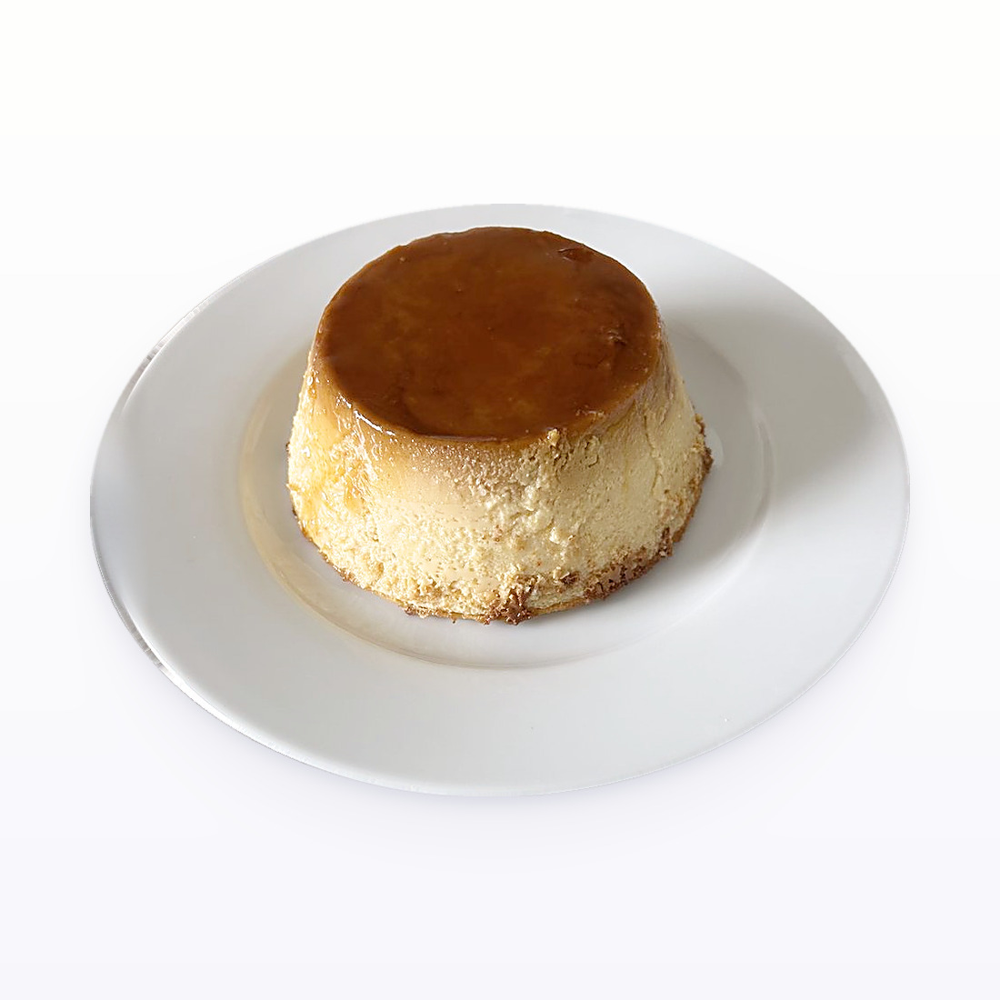

Baking / Custards
Flan

- Yield
- 8 servings
- Active Time
- 15 min
- Rest
- 4 h chill, or overnight
- Oven
- 350F, 40-45 min in a water bath
- Source
- A Cozy Kitchen, acozykitchen.com/classic-flan
- Energy Cost
- $2.58 (45 min bake plus 30 min, 3.5 kW at 59 cents/kWh)
Ingredients
Batch
- Eggs: 4 large
- Egg yolks: 2 large
- Kosher salt: 0.5 tsp
- Sweetened condensed milk: 1 can, 14 oz
- Evaporated milk: 1 can, 12 oz
- Vanilla paste: 1 tsp, or half a vanilla bean, or 1 tbsp extract
- Granulated sugar, for the caramel: 1 cup
- Water, for the caramel: 0.25 cup
- Kosher salt, for the caramel: a pinch
Method
- Heat the oven to 350F and set up a water bath. A 9 inch cake pan inside a roasting pan works.
- Blend the eggs, yolks, salt, both milks and the vanilla about 30 seconds, until smooth. Do not aerate it. If it froths, let it settle.
- Caramel: dissolve the sugar in the water over medium-low heat.
- Turn the heat to high and boil about 5 minutes, until it goes from clear to light gold. The boiling is what drives the water off.
- As soon as it turns light gold, drop to medium-low and take it to a proper golden brown.
- Pour into the pan at once and swirl to coat the base. It sets fast, so move quickly, and the pan will be very hot.
- Let the caramel harden about 5 minutes.
- Stir the custard, pour it over the set caramel, and cover tightly with foil.
- Sit it in the water bath and fill with hot water from a kettle.
- Bake 40 to 45 minutes, until just jiggly but set.
- Cool 30 minutes on the counter, then chill at least 4 hours or overnight.
- Run a knife round the edge, invert onto a plate, smack the base to release.
Notes
- Blend rather than whisk, but stop at smooth. Bubbles blended in become holes in the set custard.
- The 5 minute hard boil on the caramel is deliberate: it removes water so the caramel sets instead of staying syrupy.
- Two cans plus 6 eggs total is a dense, firm flan rather than a loose one.
- The chill is not optional. It will not unmould cleanly warm.
Learnings
Not made yet.